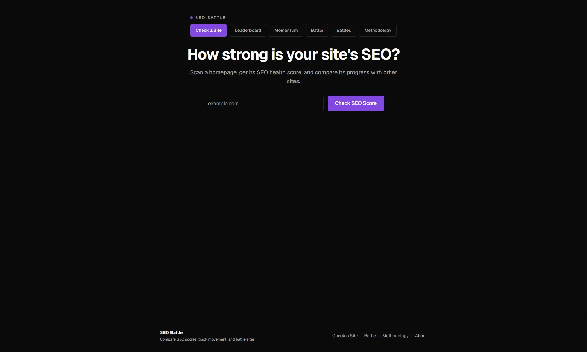

What Does an SEO Score Really Tell You? Why I Built SEO Battle
Published on August 31, 2026

SEO Battle adds history and comparison to a homepage SEO score so changes can be tracked over time.
An SEO score became more useful to me when I started using it to check whether the changes I made on my own sites were improving anything.
I was not looking for another number to collect. I wanted to know if a site was better than it was a week ago, whether a technical fix moved the score, and how one site compared with another after I made changes.
That was where the problem started.
Most SEO checkers gave me a score for that moment. I could see the result, but I still had to remember the previous number, compare it manually, and work out whether the site was moving in the right direction.
So I started building something for myself.
At first, SEO Battle was just a simple homepage checker. Then I kept adding the things I needed while testing my own sites: scan history, score movement, public profiles, head-to-head comparisons, saved battles, a leaderboard, and momentum rankings.
The project also gave me a practical reason to question the usual claim that “SEO is dead.” I could still see technical and on-page changes producing measurable differences. The harder part was keeping track of those changes in a way that made sense over time.
SEO Battle does not try to reduce SEO to one perfect number. A 100/100 only means the homepage passed the checks included in the current scoring model.
For me, the useful part is the context around the number: where the site started, what changed, and whether it is improving.
Quick Answer: What Does an SEO Score Mean?
An SEO score is a summary of how well a page passes the checks included in a specific scoring model.
It can help you see whether technical and on-page conditions are improving, but the number only makes sense in context. Different tools may check different things, use different weights, or score a different part of the site.
An SEO score is not a Google ranking score, and a 100/100 does not mean a site has perfect SEO. It only means the page passed all the checks measured by that particular model.
Why I Built SEO Battle to Track SEO Improvement
I did not start SEO Battle because I thought the internet needed another SEO checker.
I built it because I wanted a better way to monitor the changes I was making on my own sites.
A single score could tell me how a homepage looked at that moment, but it could not answer the question I cared about most: is the site improving over time?
A Single Score Did Not Show Me Enough
If a site scores 92/100 today, that number can look useful on its own.
But I still want to know what happened before it.
Was the previous score 78? Was it already 92 last week? Did a technical change improve the page, or did nothing move at all?
That was the gap I kept running into. I could scan a site, make changes, and scan it again, but I still had to compare the results manually.
The number was useful. The history was more useful.
I Wanted to See Whether My Changes Were Working
When I update a site, I want to know whether the change had an effect on the checks I am tracking.
That could mean fixing a missing meta description, adding the right canonical tag, improving image ALT coverage, correcting the H1 structure, or making sure the homepage is indexable.
Instead of keeping separate notes or trying to remember an old score, I wanted the tool to show the previous result beside the current one.
A move from 92 to 97 tells me something that 97 alone cannot.
It shows direction.
The Tool Grew Beyond a One-Time Checker
SEO Battle started as a simple homepage scan.
Once I started saving results, the next features became easier to justify.
I added public site profiles so I could see scan history. I added score movement so I could check whether a site was improving. Then I added head-to-head battles, saved battle records, a leaderboard, and momentum rankings.
The project changed from a one-time checker into something I could use to follow SEO health over time and compare one site with another.
That is the part that became most useful to me.
How the SEO Battle SEO Score Works
SEO Battle uses a 100-point homepage SEO score. The score is divided into four groups so I can see where a page is strong and where it is missing basic SEO checks.
The score is not meant to copy another SEO tool. It reflects the checks I chose to track in SEO Battle and the weight assigned to each one.
Technical Setup: 25 Points
This group checks whether the homepage has the basic technical setup I expect to see:
- Homepage is reachable
- HTTPS is available
- Canonical tag exists
- Canonical tag is valid
- Mobile viewport is present
These checks make up 25 points of the total score.
On-Page Signals: 35 Points
On-page checks carry the largest share of the score.
SEO Battle looks for:
- Title tag
- Title length between 30 and 60 characters
- Meta description
- Meta description length between 120 and 160 characters
- H1
- Exactly one H1
Together, these checks account for 35 points.
Crawl and Indexability: 25 Points
A page can have a good title and description but still create problems for search engines if its crawl or indexing setup is wrong.
SEO Battle checks:
- Whether the page is indexable
- robots.txt
- Sitemap
- HTML language attribute
- Internal links
This group contributes another 25 points.
Search and Share Markup: 15 Points
The final 15 points cover markup that helps search engines and social platforms understand or present the page.
The checks include:
- JSON-LD structured data
- Open Graph title
- Open Graph description
- Image ALT coverage
SEO Battle considers image ALT coverage good when at least 80% of detected images have an ALT attribute. If the page has no images, that check passes.
Add the four groups together and the maximum score is 100 points.
Important: A 100/100 SEO score does not mean perfect SEO. It means the scanned homepage passed every check included in the current SEO Battle scoring model.
If you want to see the complete point breakdown, you can review the SEO Battle scoring methodology .
Why SEO Score History and Comparison Matter
A single SEO score gives me a snapshot. The history around that score tells me whether the site is moving in the right direction.
That difference matters when I am making changes across my own sites and want a quick way to see whether the technical and on-page work is paying off.
92 to 97 Tells Me More Than 97 Alone
If I scan a site today and see 97/100, that is useful.
But if the previous scan was 92/100, I learn more.
I can see that something changed between the two scans. Then I can check which signals improved and connect that movement with the updates I made.
The same works in the other direction. If a score drops, I know I should look at what changed instead of assuming the site is still in the same condition.
Comparing Two Websites Adds Context
History shows how one site changes over time. Comparison answers a different question.
If two sites both look strong, I can run a head-to-head battle and compare their homepage SEO scores side by side.
SEO Battle also breaks the result into the same four scoring groups:
- Technical setup
- On-page signals
- Crawl and indexability
- Search and share markup
That helps me see whether the difference comes from one area or from several smaller gaps.
Saved Battles Preserve What Happened
I did not want old battle results to change every time one of the sites was scanned again.
So saved battles keep the score, category result, and winner from that moment.
That matters because a historical comparison should stay historical. If one site improves later, the old battle still shows what the result was when the comparison happened.
Leaderboard and Momentum Answer Different Questions
I also separated Leaderboard and Momentum because they measure different things.
The Leaderboard answers: Which sites have the strongest current SEO score?
Momentum answers: Which sites are improving between scans?
A site can rank high on the Leaderboard and show no recent movement. Another site can have a lower current score but be improving faster.
For me, that distinction makes the score more useful because it separates current strength from progress over time.
What an SEO Score Cannot Tell You
The more I used SEO Battle, the clearer it became that the score needed limits.
A number can help me check whether a homepage passes the signals I chose to measure. It cannot explain the full SEO condition of a site.
A High Score Does Not Guarantee Rankings
A site can score well in SEO Battle and still struggle in search.
The score does not tell me whether the page targets the right query, satisfies search intent, earns links, builds topical authority, or converts visitors.
It also does not predict where Google will rank the page.
That is why I do not treat 100/100 as a ranking claim.
SEO Battle Currently Measures the Homepage
The current scoring model is focused on the homepage.
That keeps the scan simple and consistent, but it also means the score does not represent every page on the site.
A homepage can pass all the checks while important landing pages, blog posts, or product pages still have their own SEO problems.
For deeper analysis, I still need to look beyond the homepage.
Technical Health Is Only Part of SEO
SEO Battle checks signals such as HTTPS, canonical tags, titles, meta descriptions, headings, indexability, internal links, structured data, and image ALT coverage.
It does not measure everything that can influence SEO performance.
For example, the score does not cover:
- Backlink quality
- Topical authority
- Keyword demand
- Search intent
- Content usefulness
- Conversion performance
- Full-site content quality
This is also why I do not use the score as a replacement for content strategy.
When I work on content, I still need to understand what people are asking and whether the page gives them a useful answer. I explored that side of the process in my article on building an answer-based SEO strategy .
The score helps me check the condition of the homepage. It does not decide the whole SEO strategy for me.
What I care about most is whether the score gives me a clearer way to track change, spot gaps, and see whether the site is moving in the right direction.
Try SEO Battle During the Public Beta
I built SEO Battle to make SEO scores more useful over time, not just to generate another one-time number.
You can use it to check a homepage SEO score, view scan history, compare two sites, and see how scores change between scans.
No login. No sign-up. No paywall.
Just enter a domain and start scanning.
Frequently Asked Questions
What is a good SEO score?
There is no universal SEO score that applies across every tool.
A score only makes sense within the scoring model that produced it. In SEO Battle, the number reflects the homepage checks included in the current 100-point model.
For me, the more useful question is whether the score is improving and which checks are causing the change.
Does a 100 SEO score mean perfect SEO?
No.
A 100/100 in SEO Battle means the scanned homepage passed every check included in the current scoring model.
It does not mean the site has perfect SEO, stronger backlinks, better content, higher authority, or guaranteed rankings.
Can two SEO tools give different SEO scores?
Yes.
Different tools may check different signals, apply different weights, or scan different parts of a site.
That is why I do not compare a score from one tool directly with a score from another and assume they mean the same thing.
Can I compare two websites with SEO Battle?
Yes.
SEO Battle lets me compare two domains side by side using the same scoring model. The battle shows the total scores as well as the results across the four scoring groups.
Saved battles also keep the result from that moment instead of changing after a later scan.
Does SEO Battle scan an entire website?
No.
The current version focuses on the homepage.
The score should be read as a homepage SEO health score, not as an audit of every page on the site.
Is SEO Battle free to use?
During the current public beta, there is no login, no sign-up, and no paywall.
You can enter a domain, run a scan, view its public profile, or compare it with another site.
Have you tried SEO Battle yet? Run your site through the public beta and see how it scores.